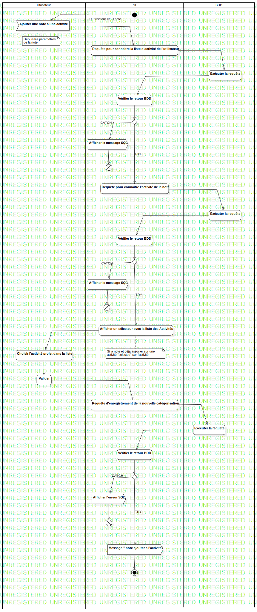

ActD Ajouter un note à une Activité
UMLActivity
Untitled
::
Note
::
Activity Diagram
::
ActD Ajouter un note à une Activité
Description
none
Diagrams

Ajouter un note à une activité
Groups
Utilisateur
SI
BDD
Edges
(InitialNode1→Ajouter une note a une activité)
ID utilisateur et ID note (Ajouter une note a une activité→Requête pour connaitre la liste d'activité de l'utilisateur)
(Requête pour connaitre la liste d'activité de l'utilisateur→Exécuter la requête)
(Exécuter la requête→Vérifier le retour BDD)
(Vérifier le retour BDD→DecisionNode1)
CATCH (DecisionNode1→Afficher le message SQL)
(Afficher le message SQL→FlowFinalNode1)
TRY (DecisionNode1→Requête pour connaitre l'activité de la note)
(Requête pour connaitre l'activité de la note→Exécuter la requête)
(Exécuter la requête→Vérifier le retour BDD)
(Vérifier le retour BDD→MergeNode1)
CATCH (MergeNode1→Afficher le message SQL)
TRY (MergeNode1→Afficher un sélecteur avec la liste des Activités)
(Afficher le message SQL→FlowFinalNode2)
(Afficher un sélecteur avec la liste des Activités→Choisir l'activité projet dans la liste)
(Choisir l'activité projet dans la liste→Valider)
(Valider→Requête d'enregistrement de la nouvelle catégorisation)
(Requête d'enregistrement de la nouvelle catégorisation→Executer la requête)
(Executer la requête→Vérifier le retour BDD)
(Vérifier le retour BDD→DecisionNode2)
CATCH (DecisionNode2→Afficher l'erreur SQL)
TRY (DecisionNode2→Message " note ajouter a l'activité")
(Message " note ajouter a l'activité"→ActivityFinalNode1)
(Afficher l'erreur SQL→FlowFinalNode2)
Properties
Name
Value
name
ActD Ajouter un note à une Activité
stereotype
null
visibility
public
isReentrant
true
isReadOnly
false
isSingleExecution
false
Owned Elements
Ajouter un note à une activité